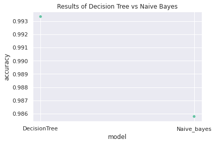

Overview
There are 12 columns present in this synthetic dataset containing information about fraudulent and non-fraudulent
transactions. The columns are described below:
- step – measurement of time in hours i.e. 1 step is 1 hr
- type – classification of what type of transaction was completed (CASH-IN, CASH-OUT, DEBIT, PAYMENT, and TRANSFER)
- amount – amount of money in a transaction
- nameOrg – customer sender account that initiated the transaction
- oldbalanceOrig – account balance of sender before transaction
- newbalanceOrig- account balance of sender after transaction
- nameDest – customer recipient account receiving the transaction
- oldbalanceDest – account balance of recipient before receiving the transaction
- newbalanceDest – account balance of recipient after receiving the transaction
- isFraud – transactions made by the fraudulent party through seizing control of a customer’s account and emptying the account
- isFlaggedFraud – transactions flagged as fraud i.e. an attempt to transfer more than 200,000 in a single transaction
From an initial run-through the data (pictured above), the number of non-fraudulent transactions drastically outweigh the
fradulent ones in both the isFraud and isFlaggedFraud columns. The data will need to be resized to create
equal representation of both the fraudulent and non-fraudulent transactions. Additionally, the column 'nameOrg'
is misspelled. If we follow the naming conventions for the other columns, then it should be 'nameOrig' but
this is a minor issue.
Visualization of Data
The first visual shows the frequency of each payment type. We see that PAYMENT and CASH-OUT types occur the most, followed by
CASH-IN, TRANSFER, and DEBIT as the least number of occurences. After this, we can explore the 'step vs amount' plot and see that
the highest transaction amounts occurred between 280 and 300 hrs, while any time stamp before or after this range has approximately the same
amount in transactions. Next, a distribution of the isFraud and isFlaggedFraud columns confirms my earlier comment about the instances
of fraudulent vs non-fraudulent transactions. There are significantly less fradulent cases than non-fraudulent which suggests that the data
for the model will need to be resized in a way that equally represents both. Interestingly enough, plotting the isFraud vs isFlaggedFraud
data seems to suggest that these 2 columns have a significant amount of overlap, however, looking at some of the sample values posted above shows
there are some points of differences.
Methodology
After importing this kaggle dataset into a dataframe in google colab, I displayed the dataframe to glean any initial insights about the data types
present in this dataframe. I then generated several different plots using the columns of the dataframe, some of which made sense. I picked 5 interesting
plots that told different parts of the overall story concerning the transations. Now that I have some understanding of the data, I can begin preparing the
data to be used to train, test, and validate 2 classifiers.
To begin, I checked for null values in the dataframe and dropped any rows that had null values. Another option would be to interpolate and fill in the missing
data but while attempting to drop rows with null values, I noticed the size of the data set did not change, which indicates that there are no null values in the
dataset.
Following the data cleansing, is the equalization and normalization of this dataset. From the data visualization, there is a significant difference in the instances
of fraud vs not-fraud in the datasets. Such large differences in the categories I want to predict can cause the model to be overly trained on one type versus another
resulting in a useless model. The models need to be trained on datatsets that are equally representative of the categories I want to predict i.e. Fraud vs Non-Fraud,
which would allow for a higher accuracy in the model prediction. Therefore, I will use the number of instances of fraud as the number of my training data set. Afterwards,
I will normalize the numerical values in the dataset to transform all features to the same scale, minimizing the influence of extremely large or small weights. To scale the
data,isued the MinMaxScaler in sklean and scaled all numerical data in the dataframe with the exception of the isFraud and isFlaggedFraud.
Using the sklean library, I imported the Decision Tree Classifer (DTC) and the Naive Bayes Classifier (NB). Realistically, I would train a few different classifiers and use
the most accurate model for real-world analysis. The NB model assumes that a particular feature has no influence on any other feature while the DTC performs well with categorical
feature values. I created split the data into 3 categories: train, test, and valid to be used in training the models, testing the models, and validating the models.
Results and Analysis
The results for both classifers are displayed below:
| Model |
|
Accuracy |
|
| Decision Tree Classifier |
|
0.9941152597402597 |
| Naive Bayes Classifier |
|
0.984577922077922 |
The DTC model has a higher accuracy on the test data at 99.4 % while NB has a sightly lower accuracy at
98.5 %. From displaying the data earlier, we know that there is some relation between the variables so the
assumption the NB model makes be contributing to this error. On the other hand, the DTC model is susciptible
to over-fitting the data so it is important to validate the modelusing validation set.
There are several ways to check model peformance
and the one I will be using is the accuracy_score() function from sklean. This function returns the fraction of correctly
classified samples with the best performance being 1 so 99. From the accuracy_score() function, DTC has 99.3 % while NB has
98.6 %. I chose a scatterplot to allow for a start visual constrast of the accuracy despite the numbers being so similar.
There are other types of performance metrics that could have revealed a more striking constrast in classifier model accuracies such as
an ROC curve or Confusion matrix that would consider false positive and true negatives. These metrics could further improve model differences
in accuracy by revealing flawsin the accuracy_score() function.
Another problem I ran into while attempting to train the model was the encoding of categorical label. I had to encode all categorical data in order to
pass the appropriate training, testing, and validating data with float values to the classifiers. I overcame this error by concactenating those three datasets
and creating dummies using pandas. However, sklearn has an encoding function that can more efficiently encode categorical variables.